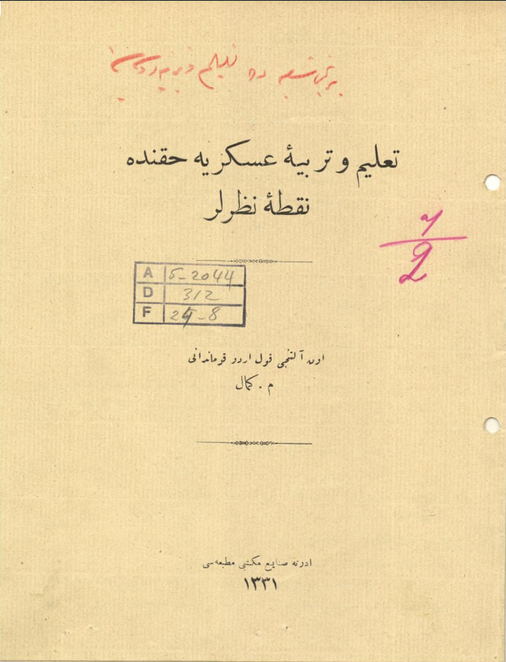
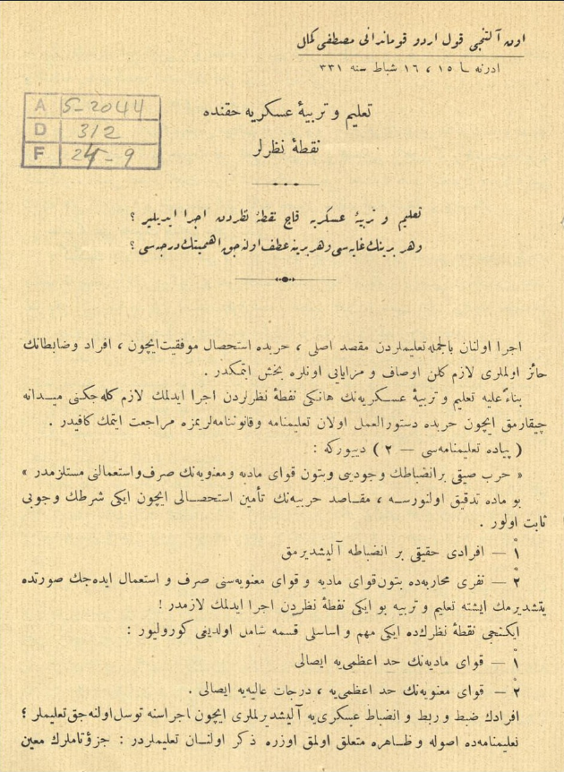
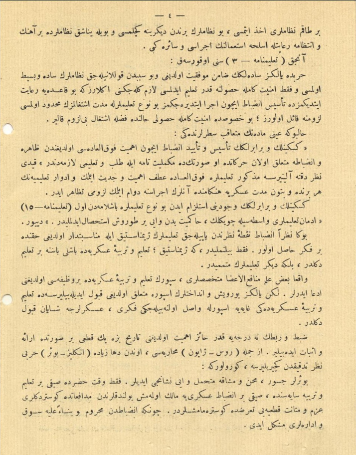
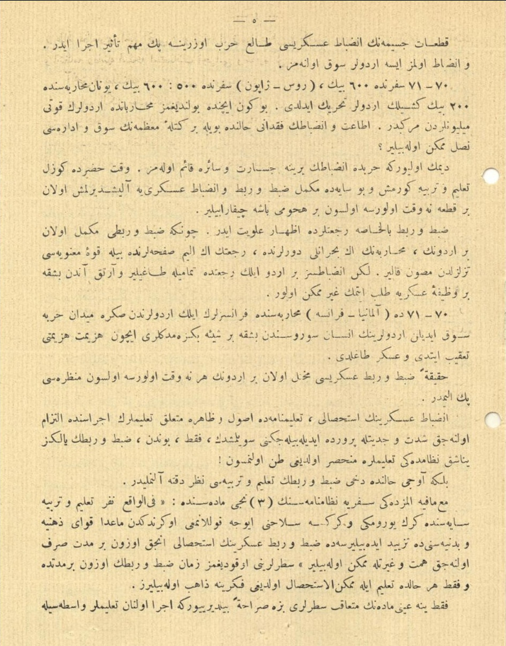
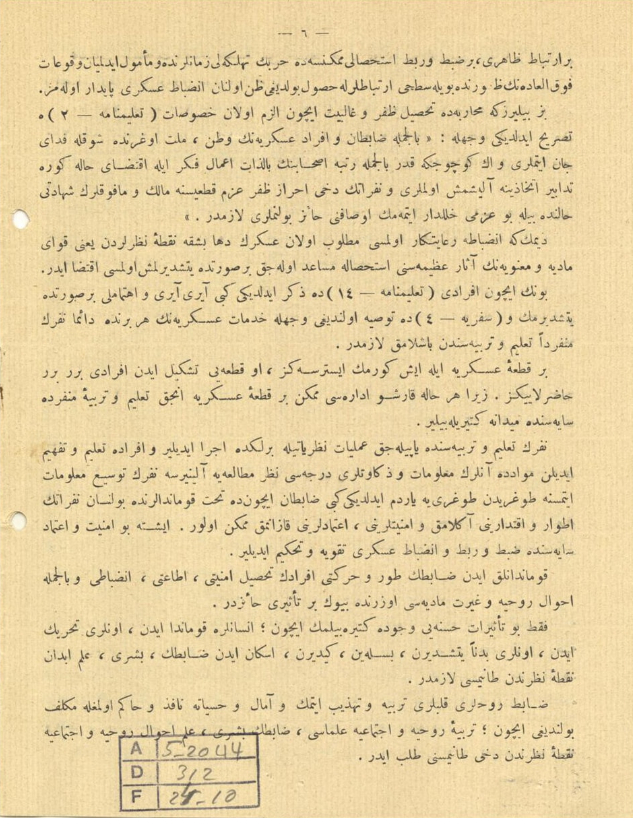
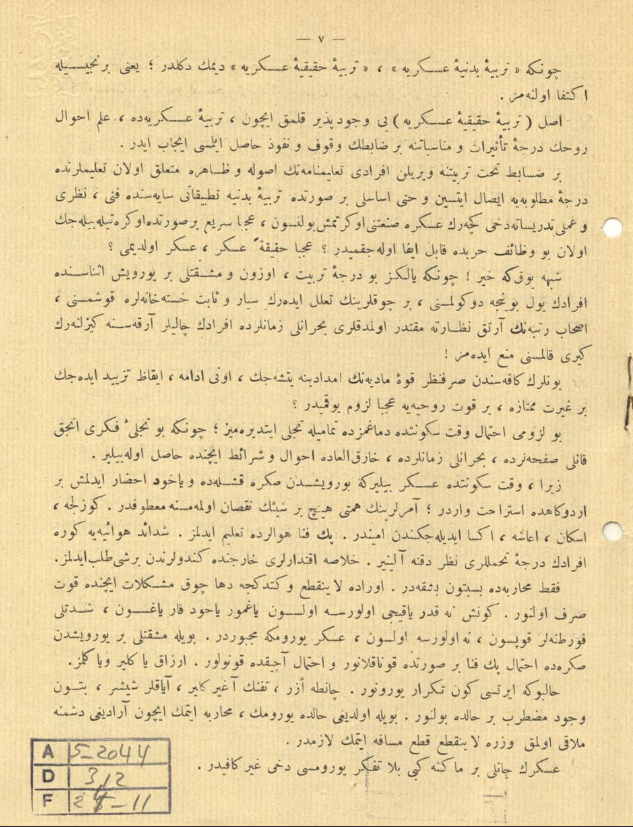
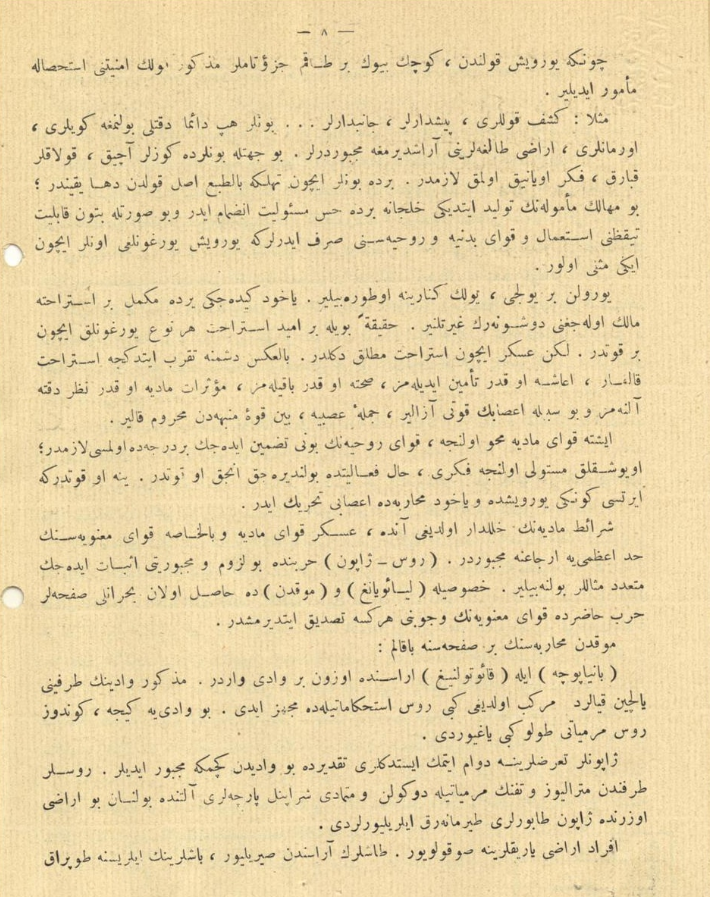
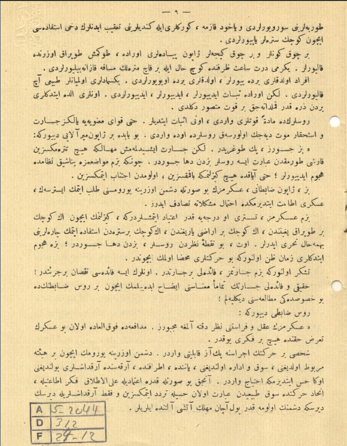
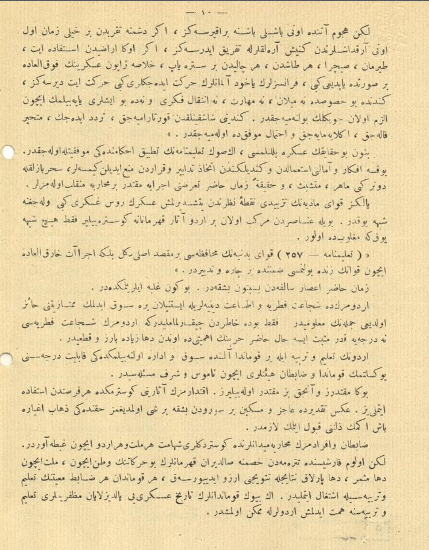
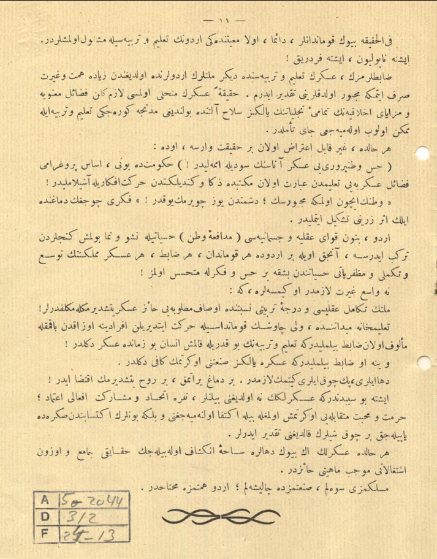

|

|
Talim ve Terbiyeyi Askeriye Hakkında Noktayi Nazarlar
On altıncı kolordu kumandanı M.Kemal
Edirne Sanayi Mektebi Matbaası
1331(1915)
|
|

|
Talim ve Terbiyeyi Askeriye Hakkında Noktayi Nazarlar
Talim ve Terbiyeyi Askeriye Kaç Noktayi Nazardan İcra Edilir?
Ve Her Birinin Gayesi Ve Her Birine Atıf Olunacak Ehemmiyetinin Derecesi?
İcra olunan bilcümle talimlerden maksadı asli, harpte istihsali muvaffakiyet için, efrad ve zabitanın haiz olmaları lazım gelen evsaf (nitelikleri) ve mezayeyi (meziyetleri) onlara bahşetmektir. Binaenaleyh (bundan dolayı) talim ve terbiyeyi askeriyenin hangi noktayi nazarlardan icra edilmek lazım geleceğini meydana çıkarmak için harpte düsturamel olan talimname ve kanunnamelerimize müracaat etmek kafiidir.
Piyade Talimnamesi - 2 diyor ki: Harb sıkı inzibatın vücudu ve bütün kuvvayi maddiye ve maneviyenin sarf ve isti'malini (kullanma) müstelzimdir (gerektirir). Bu madde tetkik olunursa, maksadı harbiyenin temini istihsali (elde etmek) için iki şartın vücubu (gerekliliği) sabit olunur.
1 - Efradı hakiki bir inzibata alıştırmak
2 - Neferi muharebede bütün kuvvayi maddeye ve kuvvayi maneviyesi sarf ve isti'mal edecek surette yetiştirmek işte talim ve terbiye bu iki noktayi nazardan icra edilmek lazımdır!
İkinci noktayi nazarında iki mühim ve esaslı kısma şamil (kapsayan) olduğu görülür:
1 - Kuvvayi maddiyenin haddi azamiye (en çok) isali (ulaştırma)
2 - Kuvvayi maneviyenin haddi azamiye, derecati (dereceler) aliyeye isali.
Efradın zabtü rabt (bağlanmak) ve inzibati askeriyeye alıştırılmaları için icrasına tevessül (el atılacak) olunacak talimler;
Talimanamede usule ve zahire (açıkça) müteallik (alakalı) olmak üzere zikrolunan talimlerdir: cüzütam (bağımsız birlik) muin (yardımcı)
|
|

|
bir takım nizamları ahz etmesi (kabul etmesi), bu nizamları birinden diğerine geçilmesi ve böyle yanaşık nizamlarda bir ahenk ve intizama riayetle esliha isti'malinin icrası vesaire gibi.
Ancak Talimname - 3'ü okursak:
Harbde yalnız sadeliğin zamin muvaffakiyet olduğu ve bu sebepten kullanılacak nizamların sade ve basit olması ve fakat emniyeti kamile husulune kadar talim edilmesi lazım geleceğini anlarız ki bu kaideye riayet ettiğimizde tesisi inzibat için icra ettireceğimiz bu nevi' talimlerle müddeti iştigalimizin mahdud olması lüzumuna kail oluruz; bu hususta emniyeti kamile husuli halinde fazla iştigal bilüzum kalır.
Halbuki aynı maddenin müteakip satırlarındaki:
Keskinlik ve beraberlik tesis ve teyiti inzibat için ehemmiyeti fevkaladesi olduğundan zahire ve inzibata müteallik olan harekette o suretininde mükemmeliyat tamme ile talep ve talimi lazımedendir. kaydı nazar dikkate alınırsa mezkur talimlere fevkalade atfı ehemmiyet ve ve ciddiyet eylemek ve edvarı talimiyenin her birinde ve bütün müddeti askeriye hengamında anların icrasına devam eylemek lüzumu tezahür eder.
Kesinlik ve beraberlik vücudunu istilzam eden bu nev' talimlere başlamadan evvel
Talimname 15 - idman talimleri vasıtasıyla çeviklik, hakimiyet beden ve iyi bir duruş istihsal edilmelidir. diyor.
Buna nazaran inzibat noktayi nazarından yapılacak talimlerin jimnastik ile münasebetdar olduğu hakkında bir fikir hasıl olur. Fakat bilinmelidir ki, jimnastik; talim ve terbiyeyi askeriyede başlı başına bir talim değildir, belki diğer talimlerin mütemmimdir.
Vakıa bazı ilmi menâfi’-ül a’zâ mütehassısları, sporun talim ve terbiyeyi askeriyede bir vazifesi olduğunu iddia ederler. Lakin yalnız yürüyüş ve endahtların spora müteallik olduğu kabul edilebilirsede talim ve terbiyeyi askeriyedeki gayeye sporla vasıl olunabileceği fikri, askerlerce şayanı kabul değildir.
Zabtü rabtın ne dereceye kadar haizi ehemmiyet olduğunu tarih bize pek kati' bir surette ira'e ve ispat edebilir. Ezcümle Rus-Japon muharebesi, ondan daha ziyade İngiliz-Boer harbi nazarı tetkikten geçirilirse, görülür ki:
Boerler cesur, mihenü meşakka mütehammil ve iyi nişancı idiler. Fakat ve kati hazırda sayki bir talim ve terbiye sayesinde, sayki bir inzibatı askeriyeye malik olmamış bulunduklarından müdafaatta gösterdikleri azim ve metaneti katiyeyi taarruzda gösterememişlerdir. Çünkü inzibattan mahrum ve binaenaleyh sevk
|
|

|
kıtaatı cesimenin inzibatı askeriyesi tali' harp üzerine pek mühim tesir icra eder. Ve inzibat olmaz ise ordular sevk olunamaz.
70-71 seferinde 600 bin, Rus-Japon seferinde 500-600 bin, Yunan muharebesinde 200 bin kişilik ordular tahrik edildi. Bugün içinde bulunduğumuz muharebatta orduların kuvveti milyonlardan mürekkeptir. İtaat ve inzibatın ? halinde böyle bir kitleyi muazzamanın sevk ve idaresi nasıl mümkün olabilir?
Demek oluyor ki harpte inzibatın yerine cesaret vesaire kaim olunamaz. Ve katihazırda güzel talim ve terbiye görmüş ve bu sayede mükemmel zabtü rabt ve inzibatı askeriyeye alıştırılmış olan bir kıta ne vakit olursa olsun bir hücumu başa çıkarabilir.
Zabtü rabt bilhassa ricatlerde izharı ulviyet eder. Çünkü zabtü rabıtı mükemmel olan bir ordunun, muharebenin en buhranlı devirlerinde, ricatin en elim safhalarında bile kuvveyi maneviyesi tezelzülden masun kalır. Lakin inzibatsız bir ordu ilk ricatta tamamiyle dağılır ve artık andan başka bir vazifeyi askeriye talep etmek gayri mümkün olur.
70-71 de Almanya - Fransa muharebesinde Fransızların ilk ordularından sonra meydanı harpte sevk edilen ordularının insan sürüsünden başka bir şeye benzemedikleri için hezimet hezimeti takip etti ve asker dağıldı.
Hakikaten zabtü rabt askeriyesi münhall olan bir ordunun her ne vakit olursa olsun manzarası pek elimdir.
İnzibatı askeriyenin istihsali, talimnamede usul ve zahire müteallik talimlerin icrasında iltizam olunacak şiddet ve ciddiyetle perverde edilebileceğini söylemiştik, fakat, bundan, zabtü rabtın yalnız yanaşık nizamdaki talimlere münhasır olduğu zannolunmasın!
Belki avcı halinde dahi zabtü rabtın talim ve terbiyesi nazarı dikkate alınmalıdır.
Mamafih elimizdeki seferiye nizamnamesinin üçüncü maddesinde: Filvaki nefer talim ve terbiye sayesinde gerek yürümeyi ve gerekse de silahını iyice kullanmayı öğrendikten maada kuvvayi zihniye ve bedeniyesinide tezyid edebilirse de zabtü rabt askerinin istihsali ancak uzun bir müddet sarf olunacak himmet ve gayretle mümkün olabilir. Satırlarını okuduğumuz zaman zabtü rabtın uzun bir müddette ve fakat her halde talim ile mümkün alelistihsal olduğu fikrine sahip olabiliriz.
Fakat yine aynı maddenin müteakib satırları bize sarahaten bildiriyor ki icra olunan talimler vasıtasıyla
|
|

|
bir irtibatı zahiri, bir zabtü rabt istihsali mümkünse de harbin tehlikeli zamanlarında ve memul edilmeyen vukuat fevkaladenin zuhurunda böyle sathi irtibatlarla husul bulduğu zannolunan inzibati askeri paydar olamaz. Biz biliriz ki muharebede tahsili zafer ve galibiyet için elzem olan hususat
Talimname 2'de tasrih edildiği vecihle: Bilcümle zabitan ve efradı askeriyenin vatan, millet uğrunda şevkle fedayı can etmeleri ve en küçüğe kadar bilcümle rütbe ashabının bizzat a'mal fikir ile iktizayi hale göre tedabir ittihazına alışmış olmaları ve nefaratın dahi ihrazı zafer azim kıtasına malik ve mafevklerin şehadeti halinde bile bu azmi haleldar etmemek evsafını haiz bulunmaları lazımdır.
Demekki inzibata riayet olması matlub olan askerin daha başka noktayi nazarlardan yani kuvvayi maddeye ve maneviyenin asarı azimisini istihsale müsaade olacak bir surette yetiştirilmiş olması iktiza eder. Bunun için efradı Talimname 14'de zikredildiği gibi ayrı ayrı ve ihtimamlı bir surette yetiştirmek ve Seferiye 4'de tavsiye olunduğu vecihle hidematı askeriyenin herbirinde daima neferin münferiden talim ve terbiyesinden başlamak lazımdır.
Bir kıtayı askeriye ile iş görmek isterseniz, o kıtayı teşkil eden efradı birer birer hazırlayınız. Zira her hale karşı idaresi mümkün bir kıtayı askeriye ancak talim ve terbiyeyi münferide sayesinde meydana getirilebilir.
Neferin talim ve terbiyesinde yapılacak ameliyat nazariyetiyle birlikte icra edilir ve efrada talim ve tefhim edilen mevadda anların malumat ve zekavetleri derecesi nazarı mütaalaya alınırsa neferin tevsi' malumat etmesine doğrudan doğruya yardım edildiği gibi zabitan içinde tahtı kumandanlarında bulunsan neferatın etvar ve iktidarını anlamak ve emniyetlerini, itimadlarını kazanmak mümkün olur. İşte bu emniyet ve itimad sayesinde zabtü rabt ve inzibatı askeri takviye ve tahkim edilir.
Kumandanlık eden zabitin tavrı ve hareketi efradın tahsil emniyeti, itaati, inzibatı ve bilcümle ahvali ruhiye ve gayreti maddiyesi üzerinde büyük bir tesir haizdir.
Fakat bu tesirat haseneyi vücuda getirebilmek için; insanlara kumanda eden, onları tahrik eden, onları bedenen yetiştiren, besleyen, giydiren, iskan eden zabitin, beşeri, ilmi ebdan noktayi nazardan tanıması lazımdır.
Zabit ruhları kalpleri terbiye ve tezhib etmek ve amal ve hissiyata nafiz ve hakim olmaya mükellef bulunduğu için; terbiyeyi ruhiye ve içtimayiye uleması, zabitin beşeri, ilmi ahval ve ruhiye ve içtimayiye noktayi nazarından dahi tanımasını talep eder.
|
|

|
Çünkü Terbiyeyi bedeniyeyi askeriye, terbiyeyi hakikiyeyi askeriye demek değildir; yani birincisiyle iktifa olunamaz.
Asıl Terbiyeyi Hakikiyeyi Askeriyeyi vücudpezir kılmak için, terbiyeyi askeriyede, ilmi ahvali ruhun dereceyi tesirat ve münasebatına bir zabitin vakıf ve nüfuz hasıl eylemesi icap eder.
Bir zabitin tahtı terbiyatına verilen efradı talimnamenin usule ve zahire müteallik olan talimlerinde dereceyi matlubeye isal etsin ve hatta esaslı bir surette terbiyeyi bedeniye tatbikatı sayesinde fani, nazari ve ameli tedrisata dahi geçerek askere sanatını öğretmiş bulunsun, acaba sari' bir surette öğretebilecek olan bu vezaif harpte kabil ifa olacak mıdır? Acaba hakikaten asker, asker oldu mu?
Şüphe yok ki hayır! Çünkü yalnız bu dereceyi terbiye, uzun ve meşakatli bir yürüyüş esnasında efradın yol boyunca dökülmesini, birçoklarının ? ederek siyar ve sebat hastahanelere koşmasını, ashabı rütbenin artık nezarete muktedir olmadıkları buhranlı zamanlarda efradın çalılar arkasında gizlenerek geri kalmasını men' edemez!
Bunların kafasından ? kuvvayı maddiyenin imdadına yetişecek, onu idam, ikazı tezyid edecek bir gayret mümtaza, bir kuvveti ruhiyeye acaba lüzum yok mudur?
Bu lüzumu ihtimal vakti sükunette asker bilir ki bu yürüşden sonra kışlada veyahut ahzar edilmiş bir ordugahda istirahat ve ordu; amirlerinin himmeti hiç bir şeyin noksan olmamasına matufdur. Güzelce, iskan, iaşe, aksa edileceğinden emindir. Pek fena havalarda talim edilmez. Şedaidi havaiyeye göre efradın dereceyi tahammülleri nazarı dikkate alınır. Hulasa iktadarları haricinde kendilerinden bir şey talep edilmez. Fakat muharebede büsbütün başkadır. Orada layenkatı ve gittikçe daha çok müşkülat içinde kuvvet sarf olunur. Güneş ne kadar yakıcı olursa olsun yağmur yahud kar yağsın, şiddetli fırtınalar kopsun, ne olursa olsun, asker yürümeye mecburdur. Böyle meşakatli bir yürüyüşten sonrada ihtimal pek fena bir surette konaklanır ve ihtimal açıkta konulur. Erzak yakılır ve kalmaz.
Halbuki ertesi gün tekrar yürünür. Çanta ezer, tüfek ağır kalır, ayaklar şişer, bütün vücut muzdarip bir halde bulunur. Böyle olduğu halde yürümek, muharebe etmek için aradığı düşmana mülaki olmak ve zarar layenkatı kati' mesafe etmek lazımdır.
Askerin canlı bir makine gibi bela tefekkür yürümesi dahi gayri kafidir.
|
|

|
Çünkü yürüyüş kolundan, küçük büyük bir takım cüzitamlar mezkur ? emniyetini istihsale memur edilir.
Mesela: Keşif kolları, pişdarlar, canibdarlar... bunlar hep daima dikkatli bulunmaya köyleri, ormanları, arazi dağlarını araştırmaya mecburlardır. Bu cihetle bunlarda gözler açık, kulaklar kabarık, fikir uyanık olmak lazımdır. Bir de bunlar için tehlike bittabi asıl koldan daha yakındır; bu mahalin memulanın tevalid ettiği halecana bir de hissi mesuliyet inzimam eder ve bu suretle bütün kabiliyet teyakkuzunu istiğmal ve kuvvayi bedeniye ve ruhiyesini sarf ederler ki yürüyüş yorgunluğu onlar için iki misli olur.
Yorulan bir yolcu, yolluk kenarına oturabilir. Yahut gideceği yerde mükemmel bir istirahate malik olacağını düşünerek gayretlenir. Hakikaten böyle bir ümiti istirahat her nevi' yorgunluk için bir kuvvettir. Lakin asker için istirahat müteallik değildir. Bilakis düşmana takarrüb ettikçe istirahat kalmaz, iaşe o kadar temin edilemez, sıhatte o kadar bakılamaz, müessiratı maddiye o kadar nazarı dikkate alınamaz ve bu sebeple a'sabın kuvveti azalır, cümleyi asabiye, beyin kuvveyi münebbihden mahrum kalır.
İşte kuvvayi maddiye mahvolunacak, kuvvayi ruhiyenin bunu tazmin edecek bir derecede olması lazımdır; uyuşukluk müstevli olmayınca (?) fikri, hali faaliyette bulunduracak ancak o kuvvettir. Yine o kuvvettir ki ertesi günkü yürüyüşte veyahut muharebede a'sabi tahrik eder.
Şeraiti maddiyenin haleldar olduğu anda, asker kuvvayi maddiye ve bilhassa kuvvayi maneviyesinin haddi azamını irca'na mecburdur. Rus - Japon harbinde bu lüzum ve mecburiyeti ispat edecek müteaddid meseleler bulunabilir. Hususuyla Liaoyang ve Mukden'de hasıl olan buhranlı safhalar harbi hazırada kuvvayı maneviyenin ve cevabını herkese tasdik ettirmiştir.
Mukden Muharebesi'nin bir safhasına bakalım: Banyapoça ile Kaotuvalnig arasında uzun bir vadi vardır. Mezkur vadinin tarafını yalçın kayalardan mürekkep olduğu gibi Rus istihkametiylede mücehhez idi. Bu vadiye gece, gündüz Rus mermiyatı dolu gibi yağıyordu.
|
|

|
torbalarını soruyorlardı veyahut kazma, kürekleri ile kendilerini takip edenlerin dahi istifadesi için küçük sütreler yapıyorlardı.
Birçok günler ve birçok geceler Japon piyadeleri orada, donmuş toprak üzerinde kalıyorlar. Yirmi dört saat tarafında göç (?) hal ile birkaç metrelik mesafe kazanabiliyorlardı.
Efrad oldukları yerde yiyorlar, oldukları yerde uyuyorlardı. Peksimadları olmayanlar tabii aç kalıyorladı. Lakin orada sebat ediyorlar, ediyorlar, ediyorlardı. Onları elde ettikleri yerden zerre kadar kımıldatacak bir kuvvet mutassavir değildi.
Ruslarında maddeten kuvvetleri vardı, onu ispat ettiler. Hatta kuvvayı maneviyeye yalnız cesaret ve istihkar mevt diyecek olursak Ruslarda o da vardı. Bu babda bir Japon miralayı diyor ki: "Biz cesuruz, pek doğrudur. lakin cesaret işitilmemiş mehalike hiç titremeksizin karşı durmaktan ibaret ise Ruslar bizden daha cesurdur. Çünkü bizim muvazaamıza yanaşık nizamda hücum ediyorlar; hatta ayakta hiç gizlenmeye bakmaksızın, ölümden ictinab etmeksizin.
Biz, Japon zabitanı, askerimizin bu suretle düşman üzerine yürümesini talep etmek istersek, askeri itaat ettirmekte ihtimali müşkülata tesadüf ederiz.
Bizim askerimiz, tesettürü o dereceye kadar itiyad etmişlerdir ki, gizlenmek için en küçük bir toprak yığınından, en küçük bir arazı yarığından, en küçük bir sütreden istifade etmek çarelerini behemehal taharri ederler. Evet, bu noktayi nazardan Ruslar, bizden daha cesur; bize hücum ettikleri zaman zannolunur bu hareketleri mahza olmak içindir.
Teşekkür olunur ki bizim cesaretimiz, faideli bir cesarettir. Onların ise faidesi noksan bir cürettir!
Hakiki ve faideli bir cesaretin tamamenesi izah edebilmek için bir Rus zabitininde bu husustaki mütalaasını dinleyelim!
Rus zabiti diyor ki:
Askerimizin akıl ve ferasetini nazarı dikkate almaya mecburuz. Müdafaada fevkalade olan bu askerin taarruz hakkında hiç bir fikri yoktur.
Şahsi bir hareketin icrasına pek az kabiliyeti vardır. Düşman üzerine yürümek için bir heyeti merbut olduğunu, sevk ve idare olunduğunu, yanında, etrafında, arkasında arkadaşları bulunduğunu ona hissettirmek ihtiyacı vardır. Ancak bu suretle kadere itimadıyla alelıtlak fikri itaatiyle, ittihadı hareketinde sevk tabii'inden ibaret olan hissiyle tereddüt etmeksizin ve fakat arkadaşlarıyla dirsek dirseğe düşmanın ölüme kadar yol açan ateşi altında ilerler.
|
|

|
Lakin hücum atında onu başlı başına bırakırsanız, eğer düşmana takarrübden bir hayli zaman evvel onu arkadaşlarından geniş aralıklarla tefrik ederseniz, eğer ona araziden istifade et, tırman, sıçra, her taştan, her çalıdan bir sütre yap, hülasa Japon askerinin fevkalade bir surette yaptığı gibi, Fransızların yahut Almanların hareket hareket edecekleri gibi hareket et derseniz, kendinde bu hususta ne milan, ne maharet, ne intikal fikri ve ne de bu işleri yapabilmek için elzem olan çeviklik bulunabilecektir. Kendini şaşkınlıktan kurtaramıyacak, tereddüd edecek, mütehayyir kalacak, anlayamayacak ve ihtimal muvaffık da olamayacaktır.
Bütün bu hakayıkın askere bellenmesi, en son talimnamenin tatbik ahkamındaki muvaffakiyetle olacaktır. Yoksa efkar ve amalnı isti'malden ve kendiliğinden ittihaz tedabir ve karardan men' edilen kimseler, sihirbazlıkla döner gibi mahir, müteşebbis, ve hakikaten zamanı hazırı taarruzunu icraya muktedir bir muharebe munkalib olamazlar. Yalnız kuvvayi maddiyenin tezyidi noktayi nazardan yetiştirilmiş askerin Rus askeri gibi olacağına şüphe yoktur. Böyle anasırdan mürekkep olan bir ordu asarı kahramane gösterebilir fakat hiç şüphe yok ki mağlupta olur.
Talimname - 257: Kuvvayı bedeniyenin muhafazası bir maksadı asli değil belki icraatı harikulade için kuvvanın zinde bulunması zamanında bir çare ve tedbirdir. Zamanı hazır asarı salifeden büsbütün başkadır. Bugün galebe ilerimindedir.
Ordumuzun da şecaati fıtrıye ve itaati bedeniyeleriyle (?) istenilen yere sevk edilmek mümtaziyetini haiz olduğu cümlenin malumudur. Fakat bu da hatırdan çıkarılmamalıdır ki ordumuzun şecaati fıtriyesi ne dereceye kadar müsbet ise hali hazırı harbinin ehemmiyetide ondan daha ziyade bariz ve kati'dir.
Ordunun talim ve terbiye ile bir kumanda altında sevk ve idare olunabilmekteki kabiliyeti derecesini (?) kumanda ve zabitan heyetleri için namus ve şeref meselesidir.
Buna muktediriz ve ancak biz muktedir olabiliriz. İktadırımızın asarını göstermekte her fırsattan istifade etmeliyiz. Aksi takdirde aciz ve miskin bir sürüden başka bir şey olamadığımız hakkındaki zehab ağyar baş (?) zilletini kabul eylemek lazımdır.
Zabitan ve efradımızın muharebe meydanlarında gösterdikleri şehamet her millet ve her ordu için gıbta avradır. Lakin ölüm karşısında titremeden hısmına saldıran kahramanların bu harekatının vatan için, millet için daha müsmir, daha parlak neticeyle tutacağını arzu ediyorsak, her kahramandan her zabit maiyetinin talim ve terbiyesiyle iştigal etmelidir. En büyük kumandanların tarihi askeriyeyi yaldızlayan muzafferiyeleri takim ve terbiyesine himmet edilmiş ordularla mümkün olmuştur.
|
|

|
Filhakika büyük kumandanlar, daima, evvela maiyetindeki ordunun talim ve terbiyesiyle meşgul olmuşlardır. İşte Napolyon, işte Frederick!
Zabitlerimizin, askerin takim ve terbiyesinde diğer milletlerin ordularından ziyade himmet ve gayret sarf etmeye mecbur olduklarını takdir ederim. Hakikaten askerin mütehalli olması olması lazım gelen fezaili maneviye ve mezayayı ahlakiyenin tamamiyeyi tecelliyatının yalnız salah altında bulunduğu müddetçe göreceği talim ve terbiye ile mümkün olup olamayacağı cayi teemmüldür.
Herhalde gayri kabil itiraz olan bir hakikat varsa o da: Hissi vatanperveriyi asker anasının sütüyle emmelidir! Hükümette bunu, esas programı fezaili askeriyeyi talimden ibaret olan mektepte zeka ve kendiğinden hareket efkarıyla aşılamalıdır!
Vatanın için ölmeye mecbursun; düşmandan yüz çevirmek yoktur! Fikri çocuğun damağında ilk eser zerrini teşkil etmelidir.
Ordu, bütün kuvvayi akliye ve cismaniyesi müdaafayı vatan hissiyatıyla neşvü nema bulmuş gençlerden terekküb ederse, ancak öyle bir orduda her kumandan, her zabit, her asker memleketinin tevsi' ve tekemmülü ve muzafferiyatı hissiyatından başka bir his ve fikirle mütehassis olmaz!
Ne vasi' gayret lazımdır o kimseler ki:
Milletin tekamili akliyesi ve dereceyi terbiyeti nisbetinde evsafı matlubeyi haiz asker yetiştirmekle mükelleftir! Talimhane meydanında, veli çavuşun kumandasıyla hareket ettirilen efradına uzaktan bakmakla meluf olan zabit bilmelidir ki talim ve terbiyenin bu kadarıyla kalmış insan bu zamanda asker değildir! Ve yine o zabit bilmelidir ki askere yalnız sanatını öğretmek kafii değildir.
Daha ileri, pekçok ileri gitmek lazımdır. Bir dimağ yaratmak, bir ruh yetiştirmek iktiza eder! İşte bu sebeptendir ki askerliğin ne olduğunu bilenler, nefere ittihad ve ? ef'ali itimad; hürmet ve muhabbeti mütekabileyi öğretmiş olmakla bile iktifa olunamayacağını ve belki bunların iktisabından sonrada yapılacak birçok şeyler kaldığını takdir ederler.
Herhalde askerlik en büyük dehalara sahayi inkişaf olabilecek hakayıkıyla cami' ve uzun iştigalatı mucib mahiyeti haizdir.
Mesleğimizi sevelim, sanatımızda çalışalım; ordu himmetimize muhtaçtır.
|